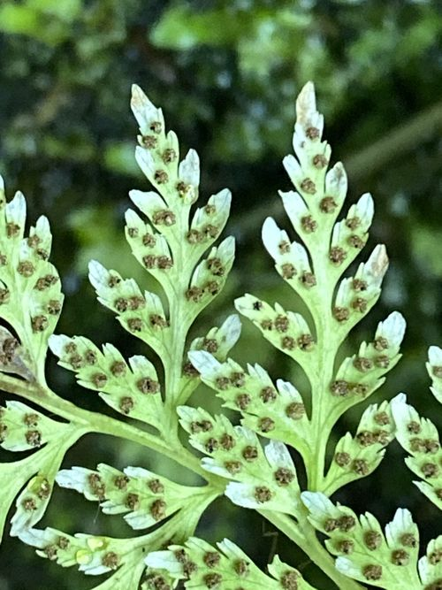

Cystopteridaceae
Bladder Fern or Fragile Fern Family
Cystopteridaceae is a relatively small family of ferns (order Polypodiales), commonly known as bladder ferns or fragile ferns. They are typically delicate, terrestrial or rock-dwelling plants with a cosmopolitan distribution, particularly in temperate and montane regions. The family is characterized by finely dissected, often brittle fronds and distinctive round sori covered by fragile, hood-like indusia attached at the base.
Overview
The Cystopteridaceae family comprises a group of generally small to medium-sized ferns renowned for their delicate and often brittle nature, hence the common name "fragile ferns." They are found nearly worldwide, thriving in moist, shaded environments such as rock crevices, cliffs, talus slopes, waterfalls, and damp woodlands, with particular diversity in temperate climates and mountainous areas. The plants typically grow from slender, creeping or short-creeping rhizomes covered in thin scales.
Fronds in this family are usually finely divided (2- to 4-pinnate), contributing to their delicate appearance. A key diagnostic feature lies in the reproductive structures: the sori are small and round, and crucially, they are protected by a unique indusium. This indusium is typically thin, translucent, and hood-shaped (cucullate), attached at the base of the sorus (on the side towards the frond apex) and arching over the developing sporangia. This basal, hood-like indusium distinguishes Cystopteridaceae from many other fern families with round sori.
Quick Facts
- Scientific Name: Cystopteridaceae Shmakov
- Common Name: Bladder Fern Family, Fragile Fern Family
- Number of Genera: ~4-5 (e.g., Cystopteris, Gymnocarpium, Acystopteris, Cystoathyrium - placement of Gymnocarpium varies)
- Number of Species: ~30-35
- Distribution: Cosmopolitan, especially diverse in temperate and montane regions worldwide.
- Evolutionary Group: Ferns (Polypodiopsida) - Polypodiales - Eupolypods II
Key Characteristics
Note: Cystopteridaceae are typically delicate ferns characterized by finely dissected fronds, round sori, and distinctive fragile, hood-like indusia attached at the base.
Sporophyte (Dominant Phase) Structure
The visible fern plant is the diploid sporophyte:
- Rhizome: Slender, creeping to short-creeping or suberect, sometimes branched; covered with thin, non-clathrate, lanceolate or ovate scales.
- Fronds (Leaves):
- Size & Form: Small to medium-sized; typically monomorphic; characteristically delicate and often brittle (breaking easily). Often deciduous.
- Stipe (Petiole): Slender, often straw-colored to brown, sometimes darker and scaly at the very base; vascular bundles are two, strap-shaped or crescent-shaped at the base, uniting distally into a single U- or V-shaped bundle (like Athyriaceae).
- Blade: Typically 2-pinnate to 4-pinnate (finely dissected), lanceolate to ovate or triangular in outline. Texture herbaceous.
- Veins: Free, simple or forked, ending before the margin.
- Indument: Blades usually glabrous or sparsely glandular; scales typically confined to rhizome and stipe base.
Reproductive Structures (Sori)
Sori contain the sporangia and are located on the underside of fertile fronds:
- Shape & Position: Sori are round, relatively small, borne on the veins, usually away from the margin.
- Indusium: Characteristically present (though sometimes small, fragile, and early-withering); thin, membranous, often translucent, hood-like (cucullate) or scale-like, attached at the base of the sorus (on the acroscopic side - towards frond apex) and arching over it. It lacks glands or hairs. Often pushed aside or deteriorating as sporangia mature. (Note: Gymnocarpium, sometimes included, lacks indusia).
Sporangia and Spores
- Sporangia: Typical leptosporangiate structure with a vertical annulus.
- Spores: Monolete (bilateral, bean-shaped) and often echinate (spiny) or rugose (wrinkled), or sometimes globose-tetrahedral (in Gymnocarpium).
Gametophyte
The small, haploid gametophyte phase:
- Form: Typically develops from the spore as a green, heart-shaped (cordate) prothallus.
Field Identification
Identifying Cystopteridaceae ferns relies heavily on observing the delicate nature of the plant and the unique structure of the indusium covering the round sori.
Primary Identification Features
- Basal Hood-like Indusium: Look closely at the round sori for a small, fragile, often translucent hood attached at the base (acroscopic side) and arching over the sporangia. (Use hand lens).
- Delicate, Finely Dissected Fronds: Fronds are typically 2- to 4-pinnate and appear lacy and fragile, often breaking easily.
- Round Sori: The sori themselves are small and circular.
- Stipe Vascular Bundles: Check the base of a cut stipe for two strap-shaped vascular bundles uniting upwards (requires cutting).
- Habitat: Often found on rocks, cliffs, or moist shaded slopes.
Secondary Identification Features
- Slender Creeping Rhizome: Rhizomes are not typically stout or trunk-forming.
- Small to Medium Size: Generally not large ferns.
Seasonal Identification Tips
- Spring/Summer: Fronds typically emerge in spring and are best observed with mature sori during summer. Many species are deciduous, dying back in fall/winter.
- Indusium Observation: The fragile indusia are best seen when sori are developing; they may wither or be pushed aside later.
Common Confusion Points
Distinguishing Cystopteridaceae requires careful observation of the indusium:
- Woodsiaceae (e.g., Woodsia): Also delicate rock ferns with 2 stipe bundles. Sori are round, but indusia (if present) are typically attached beneath the sorus and are often star-shaped, cup-shaped, or filamentous (splitting into hair-like segments), not hood-like from the base.
- Athyriaceae (e.g., Athyrium): If sori are round, the indusium is usually kidney-shaped (reniform) and attached along the sinus (side), not hood-like from the base. Fronds can be similarly dissected, but often larger/less brittle. Shares 2 stipe bundles.
- Dryopteridaceae (e.g., Dryopteris): Sori are round with kidney-shaped indusia attached at the sinus. Fronds are often coarser, and stipes have multiple (3+) round vascular bundles.
- Thelypteridaceae: Sori round with kidney-shaped indusia (or absent). Often have needle-like hairs. Shares 2 stipe bundles.
- Gymnocarpium (Oak Ferns): Sometimes placed in Cystopteridaceae or Woodsiaceae. Distinguished by the complete absence of indusia and often tripartite frond structure. Spores are globose-tetrahedral.
Key differentiator: The combination of round sori, a basal, hood-like, fragile indusium, and finely dissected, delicate fronds with two stipe bundles is characteristic of core Cystopteridaceae (like Cystopteris).
Field Guide Quick Reference
Look For:
- Sori: Round
- Indusia: Hood-like, fragile, attached at base (acroscopic side)
- Fronds: Delicate, finely dissected (2-4 pinnate), often brittle
- Stipe Base: Two strap/crescent vascular bundles
- Habitat: Often rocks, cliffs, moist shade
- Rhizome: Slender, creeping
Key Distinctions:
- vs. Woodsiaceae: Indusium inferior (star/cup/filamentous), not basal hood.
- vs. Athyriaceae/Dryopteridaceae/Thelypteridaceae: Indusium kidney-shaped attached at side/sinus (if round sori present). Dryopteridaceae have multiple stipe bundles.
- vs. Gymnocarpium: Lacks indusia entirely.
Notable Examples
The family is dominated by the genus Cystopteris, but includes a few other small genera.

Cystopteris fragilis
Fragile Fern, Brittle Bladder Fern
A highly variable and cosmopolitan species complex, epitomizing the family's delicate nature. Found commonly in rock crevices and on walls. Fronds are 2- to 3-pinnate with the characteristic hood-like indusia.

Cystopteris bulbifera
Bulblet Bladder Fern
Native to eastern North America, often on moist limestone cliffs. Distinguished by its more elongated, tapering fronds and the presence of small green bulblets on the underside of the rachis, which can drop off and form new plants (vegetative reproduction).

Gymnocarpium dryopteris
Oak Fern, Northern Oak Fern
Circumboreal distribution. Often included in Cystopteridaceae (or Woodsiaceae). Characterized by its broadly triangular, tripartite fronds held horizontally, and the complete lack of indusia covering the small, round sori.
Phylogeny and Classification
Cystopteridaceae is placed within the large Eupolypods II clade in the order Polypodiales. Molecular phylogenetic studies confirm it as a distinct lineage, closely related to families like Woodsiaceae, Athyriaceae, Aspleniaceae, and Rhachidosoraceae. The circumscription is relatively stable for the core genus Cystopteris and the small Asian genus Acystopteris.
The placement of Gymnocarpium (Oak Ferns) is more debated; molecular data often place it sister to the rest of Cystopteridaceae + Woodsiaceae + Athyriaceae + related families, or sometimes nested closer to Woodsiaceae or Cystopteridaceae. Due to its lack of indusia and distinct spore type, it is sometimes placed in its own family or within Woodsiaceae, but the PPG I classification includes it within Cystopteridaceae. The family, even including Gymnocarpium, remains relatively small compared to its neighbors.
Position in Plant Phylogeny
- Kingdom: Plantae
- Division: Pteridophyta (or Polypodiophyta)
- Class: Polypodiopsida
- Order: Polypodiales
- Family: Cystopteridaceae
- (Part of the Eupolypods II clade)
Evolutionary Significance
Cystopteridaceae is significant for:
- Characteristic Indusium: The basal, hood-like indusium represents a distinct morphological feature within ferns with round sori.
- Adaptation to Rupestral Habitats: Many species are specialized for growing in rock crevices and on cliffs.
- Cosmopolitanism in a Small Family: Despite having relatively few species, the family has achieved a near-global distribution.
- Cryptic Speciation: Genera like Cystopteris contain species complexes with subtle morphological differences and polyploidy, indicating ongoing evolution.